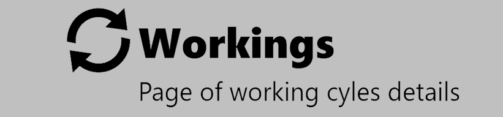

Questa pagina mostra le statistiche delle lavorazioni eseguite dalle macchine collegate al MES.

REPORT | |
 | WORKING |
REPORT
Questa pagina mostra i report disponibili per ogni lavorazione.

PULSANTI
TYPE | |
DATA | |
SAVE | |
SETTINGS | |
 | AUMENTO ZOOM |
 | DIMINUZIONE ZOOM |
 | RIPRISTINO ZOOM |
LAVORAZIONE
Questa sezione mostra le statistiche dei cicli di lavoro registrati dal MES.

REPORT | |
DATA |
CICLI DI LAVORAZIONE
Questa sezione mostra le statistiche dei cicli di lavoro della macchina selezionata.
LAVORAZIONE SLABS
Questa sezione mostra le statistiche delle lastre lavorate.

LAVORAZIONE PEZZI
Questa sezione mostra le caratteristiche dei pezzi lavorati.

LAVORAZIONE BLOCCHI
Questa sezione mostra le statistiche dei blocchi lavorati.

STRUMENTI DI LAVORAZIONE
Questa sezione mostra le statistiche degli utensili usati nei cicli di lavoro.